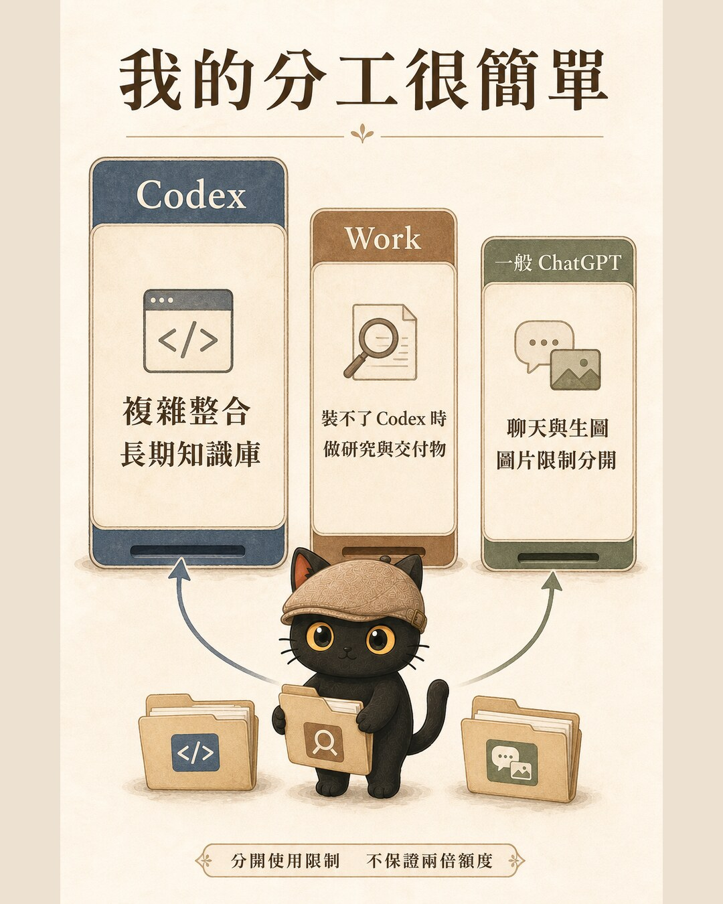
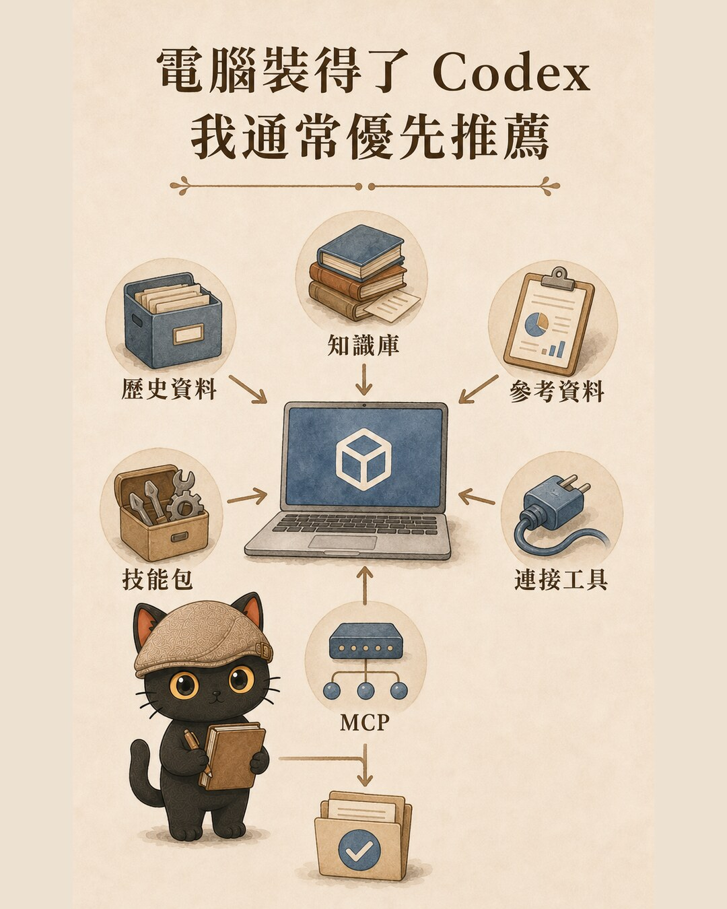

先釐清額度：Work 跟 Codex 共用 agentic usage
OpenAI 目前說明，符合資格的 Plus 或 Pro 使用者，ChatGPT Work 與 Codex 會使用同一份 agentic usage allowance。它們是兩個工作入口，使用量要放在一起看。
一般 ChatGPT 的聊天、檔案、圖片與語音等功能有各自限制。OpenAI 也寫明，ChatGPT 的圖片生成限制不會套用到 Codex。這讓我可以把長時間操作檔案與工作流的任務留給 Codex，把單純聊天或生圖視情況交給一般 ChatGPT。
我的選法很簡單：先看電腦
電腦能安裝、任務複雜、需要長期知識庫或多種工具接力時使用。
- 本機資料夾與 repo
- 歷史資料與知識庫
- Skills、Plugins、Apps
- 終端與 MCP
電腦裝不了 Codex，或主要做研究與交付物時使用。
- Projects 與參考檔
- 自訂指令
- 方案允許的 Plugins、Skills
- 文件、簡報、試算表、Sites
快速聊天、單次討論與圖片生成時使用。
- 聊天與發想
- 上傳單次素材
- 圖片生成
- 獨立的功能限制

為什麼複雜工作我會放進 Codex
Codex 桌面版可以使用本機資料夾、repository、終端與開發工具。再加上 Skills、Plugins、Apps，以及依環境設定的 MCP 連接，就能把歷史資料、知識庫、參考資料、技能包與連接工具放進同一套長期工作流。
這些東西放在一起後，Codex 可以先讀過去資料，再照技能包的步驟執行，過程中使用本機工具，最後把成果與工作日誌寫回電腦。下次做同類工作，就能從前一次累積的位置繼續。
MCP 的正式名稱是 Model Context Protocol。口述時容易講成 NCP，文章與圖卡統一使用 MCP。

電腦裝不了 Codex，Work 仍然能完成不少工作
Work 可用於研究、分析與交付物製作，例如文件、試算表、簡報、報告與 Sites。它可以放在 ChatGPT Project 裡使用，Project 能集中聊天、參考檔與自訂指令。方案與工作區設定允許時，也能使用 Plugins 與 Skills。
Work 網頁版在雲端執行，無法直接讀取電腦裡的本機資料夾。需要本機檔案時，可以上傳到 Project；若資料量大、檔案持續變動，或工作需要終端與 repo，Codex 的操作方式會更合適。
圖文網頁的實際分工
- 文章、資料查證與網頁結構交給 Codex。
- 把每張圖片的用途、比例、文字與角色規格整理成生圖提示。
- 讓一般 ChatGPT 逐張生成圖片。
- 把圖片下載回自己的電腦。
- 請 Codex 把圖片放進網頁，補上替代文字、尺寸、壓縮與版面。
- 最後一起檢查文章、圖片、手機版與檔案是否完整。
這個分工讓文字、網頁與圖片各自走適合的入口。圖片完成後仍要自己下載保存，再交給 Codex 做整合。
開始前先問五個問題
- 要不要直接讀寫電腦裡的資料夾？要的話優先看 Codex。
- 工作會不會持續幾週或幾個月，之後還要沿用歷史資料？會的話放進 Codex，或至少建立 Project。
- 需不需要終端、repo、腳本或多種工具一起執行？需要的話優先看 Codex。
- 電腦無法安裝 Codex，但仍要做研究與交付物？用 Work 搭配 Project、參考檔與技能包。
- 這次只是聊天或大量生圖嗎？可以考慮一般 ChatGPT，把 agentic usage 留給複雜工作。
這套分工的能力邊界
每個帳號能使用的功能，會依方案、workspace 設定、使用者角色、介面、地區與推出進度不同。Plugins、Skills、Apps 與 MCP 也要看該環境是否已開放並完成授權。
開始前仍要看自己的畫面與 Usage Dashboard。這篇提供選擇順序，實際能力以當下帳號顯示與官方文件為準。
官方資料來源
- ChatGPT Work and Codex
- Using Credits for Flexible Usage in ChatGPT
- Using Codex with your ChatGPT plan
- Projects in ChatGPT
- Plugins in ChatGPT and Codex
查證日期：2026-07-16。產品功能與限制可能更新。
把 AI 用成幫你累積判斷力的工具
我每月固定舉辦兩場免費線上講座，主題輪流談怎麼把工作流程、判斷、經驗，整理成 AI 能靈活運用的提示詞、技能包與知識庫。想收到開課通知，或想把手上卡住的問題拿出來討論，都歡迎先從社群開始。
免費講座場次會先在這裡公布，也可以直接把你的實際情況丟上來一起看。
加入社群 ↗